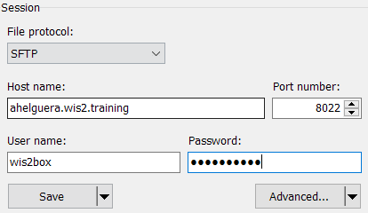

Automating data ingestion
Learning outcomes
By the end of this practical session, you will be able to:
- understand how the data plugins of your dataset determine the data ingest workflow
- ingest data into wis2box using a script using the MinIO Python client
- ingest data into wis2box by accessing MinIO over SFTP
Introduction
The wis2box-management container listens to events from the MinIO storage service to trigger data ingestion based on the data-plugins configured for your dataset. This allows you to upload data into the MinIO bucket and trigger the wis2box workflow to publish data on the WIS2 broker.
The data-plugins define the Python modules that are loaded by the wis2box-management container and determine how the data is transformed and published.
In the previous exercise you should have created a dataset using the template surface-based-observations/synop which included the following data-plugins:

When a file is uploaded to MinIO, wis2box will match the file to a dataset when the filepath contains the dataset id (metadata_id) and it will determine the data plugins to use based on the file extension and file pattern defined in the dataset mappings.
In the previous sessions, we triggered the data ingest workflow by using the wis2box command line functionality, which uploads data to the MinIO storage in the correct path.
The same steps can be done programmatically by using any MinIO or S3 client software, allowing you to automate your data ingestion as part of your operational workflows.
Alternatively, you can also access MinIO using the SFTP protocol to upload data and trigger the data ingest workflow.
Preparation
Login to you student VM using your SSH client (PuTTY or other).
Make sure wis2box is up and running:
cd ~/wis2box-1.0.0rc1/
python3 wis2box-ctl.py start
python3 wis2box-ctl.py status
Make sure MQTT Explorer is running and connected to your instance. If you are still connected from the previous session, clear any previous messages you may have received from the queue. This can be done by either by disconnecting and reconnecting or by clicking the trash can icon for the given topic.
Make sure you have a web browser open with the Grafana dashboard for your instance by going to http://<your-host>:3000
And make sure you have a second tab open with the MinIO user interface at http://<your-host>:9001. Remember you need to login with the WIS2BOX_STORAGE_USER and WIS2BOX_STORAGE_PASSWORD defined in your wis2box.env file.
Exercise 1: setup a Python script to ingest data into MinIO
In this exercise we will use the MinIO Python client to copy data into MinIO.
MinIO provides a Python client which can be installed as follows:
pip3 install minio
On your student VM the 'minio' package for Python will already be installed.
Go to the directory exercise-materials/data-ingest-exercises; this directory contains a sample script copy_file_to_incoming.py that uses the MinIO Python client to copy a file into MinIO.
Try to run the script to copy the sample data file csv-aws-example.csv into the wis2box-incoming bucket in MinIO" as follows:
cd ~/exercise-materials/data-ingest-exercises
python3 copy_file_to_incoming.py csv-aws-example.csv
Note
You will get an error as the script is not configured to access the MinIO endpoint on your wis2box yet.
The script needs to know the correct endpoint for accessing MinIO on your wis2box. If wis2box is running on your host, the MinIO endpoint is available at http://<your-host>:9000. The script also needs to be updated with your storage password and the path in the MinIO bucket to store the data.
Update the script and ingest the CSV data
Edit the script copy_file_to_incoming.py to address the errors, using one of the following methods:
- From the command line: use the nano or vim text editor to edit the script
- Using WinSCP: start a new connection using File Protocol SCP and the same credentials as your SSH client. Navigate to the directory exercise-materials/data-ingest-exercises and edit copy_file_to_incoming.py using the built-in text editor
Ensure that you:
- define the correct MinIO endpoint for your host
- provide the correct storage password for your MinIO instance
- provide the correct path in the MinIO bucket to store the data
Re-run the script to ingest the sample data file csv-aws-example.csv into MinIO:
python3 copy_file_to_incoming.py csv-aws-example.csv
And make sure the errors are resolved.
You can verify that the data was uploaded correctly by checking the MinIO user interface and seeing if the sample data is available in the correct directory in the wis2box-incoming bucket.
You can use the Grafana dashboard to check the status of the data ingest workflow.
Finally you can use MQTT Explorer to check if notifications were published for the data you ingested. You should see that the CSV data was transformed into BUFR format and that a WIS2 data notification was published with a "canonical" url to enable downloading the BUFR data.
Exercise 2: Ingesting binary data
Next, we try to ingest binary data in BUFR format using the MinIO Python client.
wis2box can ingest binary data in BUFR format using the wis2box.data.bufr4.ObservationDataBUFR plugin included in wis2box.
This plugin will split the BUFR file into individual BUFR messages and publish each message to the MQTT broker. If the station for the corresponding BUFR message is not defined in the wis2box station metadata, the message will not be published.
Since you used the surface-based-observations/synop template in the previous session you data mappings include the plugin FM-12 data converted to BUFR for the dataset mappings. This plugin loads the module wis2box.data.synop2bufr.ObservationDataSYNOP2BUFR to ingest the data.
Ingesting binary data in BUFR format
Run the following command to copy the binary data file bufr-example.bin into the wis2box-incoming bucket in MinIO:
python3 copy_file_to_incoming.py bufr-example.bin
Check the Grafana dashboard and MQTT Explorer to see if the test-data was successfully ingested and published and if you see any errors, try to resolve them.
Verify the data ingest
How many messages were published to the MQTT broker for this data sample?
Click to reveal answer
If you successfully ingested and published the last data sample, you should have received 10 new notifications on the wis2box MQTT broker. Each notification correspond to data for one station for one observation timestamp.
The plugin wis2box.data.bufr4.ObservationDataBUFR splits the BUFR file into individual BUFR messages and publishes one message for each station and observation timestamp.
Exercise 3: Ingesting SYNOP data in ASCII format
In the previous session we used the SYNOP form in the wis2box-webapp to ingest SYNOP data in ASCII format. You can also ingest SYNOP data in ASCII format by uploading the data into MinIO.
In the previous session you should have created a dataset which included the plugin 'FM-12 data converted to BUFR' for the dataset mappings:
This plugin loads the module wis2box.data.synop2bufr.ObservationDataSYNOP2BUFR to ingest the data.
Try to use the MinIO Python client to ingest the test data synop-202307.txt and synop-202308.txt into your wis2box instance.
Note that the 2 files contain the same content, but the filename is different. The filename is used to determine the date of the data sample.
The synop2bufr plugin relies on a file-pattern to extract the date from the filename. The first group in the regular expression is used to extract the year and the second group is used to extract the month.
Ingest FM-12 SYNOP data in ASCII format
Go back to the MinIO interface in your browse and navigate to the wis2box-incoming bucket and into the path where you uploaded the test data in the previous exercise.
Upload the new files in the correct path in the wis2box-incoming bucket in MinIO to trigger the data ingest workflow.
Check the Grafana dashboard and MQTT Explorer to see if the test data was successfully ingested and published.
What is the difference in the properties.datetime between the two messages published to the MQTT broker?
Click to reveal answer
Check the properties of the last 2 notifications in MQTT Explorer and you will note that one notification has:
"properties": {
"data_id": "wis2/urn:wmo:md:nl-knmi-test:surface-based-observations.synop/WIGOS_0-20000-0-60355_20230703T090000",
"datetime": "2023-07-03T09:00:00Z",
...
and the other notification has:
"properties": {
"data_id": "wis2/urn:wmo:md:nl-knmi-test:surface-based-observations.synop/WIGOS_0-20000-0-60355_20230803T090000",
"datetime": "2023-08-03T09:00:00Z",
...
The filename was used to determine the year and month of the data sample.
Exercise 4: Ingesting data into MinIO using SFTP
Data can also be ingested into MinIO over SFTP.
The MinIO service enabled in the wis2box-stack has SFTP enabled on port 8022. You can access MinIO over SFTP using the same credentials as for the MinIO user interface. In this exercise we will the admin credentials for the MinIO service as defined in wis2box.env, but you can also create additional users in the MinIO user interface.
To access MinIO over SFTP you can use any SFTP client software. In this exercise we will use WinSCP, which is a free SFTP client for Windows.
Using WinSCP, your connection would look as follows:

For username and password, use the values of WIS2BOX_STORAGE_USERNAME and WIS2BOX_STORAGE_PASSWORD environment variables from your wis2box.env file. Click 'save' to save the session and then 'login' to connect.
When you login you will see the MinIO bucket wis2box-incoming and wis2box-public in the root directory. You can upload data to the wis2box-incoming bucket to trigger the data ingest workflow.
Click on the wis2box-incoming bucket to navigate into this bucket, then right-click and select New->Directory to create a new directory in the wis2box-incoming bucket.
Create the directory not-a-valid-path and upload the file randomfile.txt into this directory (you can use any file you like).
The check the Grafana dashboard at port 3000 to see if the data ingest workflow was triggered. You should see:
ERROR - Path validation error: Could not match http://minio:9000/wis2box-incoming/not-a-valid-path/randomfile.txt to dataset, path should include one of the following: ...
The error indicates that the file was uploaded to MinIO and the data ingest workflow was triggered, but since the path does not match any dataset in the wis2box instance the data mapping failed.
You can also use sftp from the command line:
sftp -P 8022 -oBatchMode=no -o StrictHostKeyChecking=no <my-hostname-or-ip>
wis2box.env for the WIS2BOX_STORAGE_USERNAME and WIS2BOX_STORAGE_PASSWORD environment variables, navigate to the wis2box-incoming bucket and then create a directory and upload a file as follows:
cd wis2box-incoming
mkdir not-a-valid-path
cd not-a-valid-path
put ~/exercise-materials/data-ingest-exercises/synop.txt .
This will result in a "Path validation error" in the Grafana dashboard indicating that the file was uploaded to MinIO.
To exit the sftp client, type exit.
Ingest data into MinIO using SFTP
Try to ingest the file synop.txt into your wis2box instance using SFTP to trigger the data ingest workflow.
Check the MinIO user interface to see if the file was uploaded to the correct path in the wis2box-incoming bucket.
Check the Grafana dashboard to see if the data ingest workflow was triggered or if there were any errors.
To ensure your data is ingested correctly, make sure the file is uploaded in the wis2box-incoming bucket in a directory that matches the dataset-id or topic of your dataset.
Conclusion
Congratulations!
In this practical session, you learned how to:
- trigger wis2box workflow using a Python script and the MinIO Python client
- use different data plugins to ingest different data formats
- upload data to MinIO using SFTP